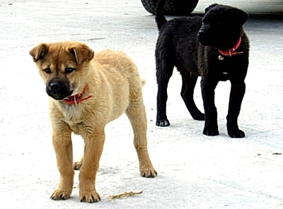

[사진은 글의 내용과 다소 관련이 없습니다]
◆ 속담은 '나쁜 것들의 모음' 이다?
'똥 묻은 개가 겨 묻은 개 나무란다'
이 속담이 주는 교훈은 무엇일까?
혹시 '자신의 허물은 돌아보지 않고 타인의 허물을 탓하는 것은 나쁜 짓이다' 라고 생각하는건 아닌지?
물론 그런 행위가 권장할만한 일인것은 아니다. 얼핏 생각해도 지양하는것이 좋을것 같긴 하다.
내가 말하고 싶은건 도대체 저 속담의 어느곳에서 '나쁜 짓이다' 라는 말을 끄집어냈는가 하는거다.
'구더기 무서워 장 못담근다'
그렇다면 이것은 '사소한 문제나 발생할 가능성이 낮은 문제를 두려워하는 것은 어리석은 짓이다' 라고 생각하는 것인가?
'까마귀 날자 배 떨어진다'
이 속담은 '선후 관계를 인과관계로 해석하는 것은 잘못된 판단이다' 라고?
진심으로 궁금해서 묻는건데.
정말 그렇게 생각하고 있는건가???
◆ 본성 (Nature)
나는 결코 속담에 없는 말이니 억지로 붙이는건 옳지 않다는 식의 말 장난을 하려는게 아니다.
하지만 정말로 우리의 속담이 'Bad Case List' 일 뿐이라고 생각하는건가?
나쁘고, 못되고, 쓸데없고, 부질없고, 어리석은 짓들의 나열이라고?
다시 한번 이 속담들을 되짚어보자.
'똥 묻은 개가 겨 묻은 개 나무란다'
'구더기 무서워 장 못담근다'
'까마귀 날자 배 떨어진다'
당신은 이런 '나쁘고, 어리석고, 잘못된' 행동이나 판단을 한 적이 없는가?
혹시 주변 사람들이 이런 행동과 판단을 하는 것을 자주 봐오지는 않았던가?
그래. 바로 그거다.
이 속담들은 지극히 인간적이고 자연적인 '본성(nature; 본성, 본질, 자연의 법칙)' 을 다루고 있는 것이다.
'등잔 밑이 어둡다'
- 맞아. 등잔 밑은 어둡지. 그리고 사람들은 자기 가까운 사람이나 사물에 무관심하고. (그게 좋은건 아니지만 본성이라구!!)
'자라 보고 놀란 가슴 솥뚜껑 보고 또 놀란다'
- 그렇지. 이건 조건반사잖아. 놀라는것도 무리는 아니지. (어리석은게 아니구! 누구나 그럴 수 있어!!)
이제 슬슬 이해가 된다.
속담은 인간의 본성과 사물의 본질, 그리고 자연의 법칙을 다루고 있다.
◆ 당연하지!
그렇다면 이 속담들이 주는 '교훈' 은 무엇인가?
다시 말하지만. '그런 어리석고 못되고 쓸데없고 잘못된 짓을 하지 말자' 가 아니다. (물론 안하는게 좋다는건 동의한다)
만약 자기의 허물을 모른 채 다른 사람의 허물을 탓하는 '똥 묻은 개' 같은 사람을 보면 당신은 어떤 생각을 하게 될까?
잠깐!
내가 똥 묻은 개의 속담에 비추어 그 생각을 도와보겠다.
'저 사람이 자신의 허물은 모른 채 남의 허물을 탓하고 있지만. 그건 인간의 본성이야. 당연히 그럴 수 있는거지.'
무엇이 달라졌을까?
속담은 우리에게 사람과 사물, 그리고 자연을 이해할 수 있도록 해준다.
이것은 바로 옛 선현들이 가르쳐준 세상의 이치이며 사회의 구성 원리인 것이다.
지고지순한 진리에 비유를 곁들여 세상을 이해하는 방법을 제시하고 있는 것이다.
당신이 어린 아이의 부모이고. 자식에게 이 험난한 세상을 살기 위해 유익한 무언가를 가르쳐주고 싶다면.
먹지 말아야 하는 버섯들의 목록, 위험한 장소 목록 같은 것을 가르쳐 줄 것인가?
아니면 왜 독버섯은 화려한 빛깔을 띄고 있는지, 왜 어둡고 외진 곳에서 범죄가 많이 일어나는지를 가르쳐 줄 것인가?
(물론 둘 다 가르쳐주고 싶을 것이다)
◆ 마치며
이렇듯 우리에게 본성과 본질, 법칙을 전해준 놀라운 선현들이 별첨으로 남겨준 보너스 같은 속담 아닌 속담이 하나 더 있다.
'옛 말 틀린거 하나 없다'
실로 그들은 치밀하기까지 한 것이다.